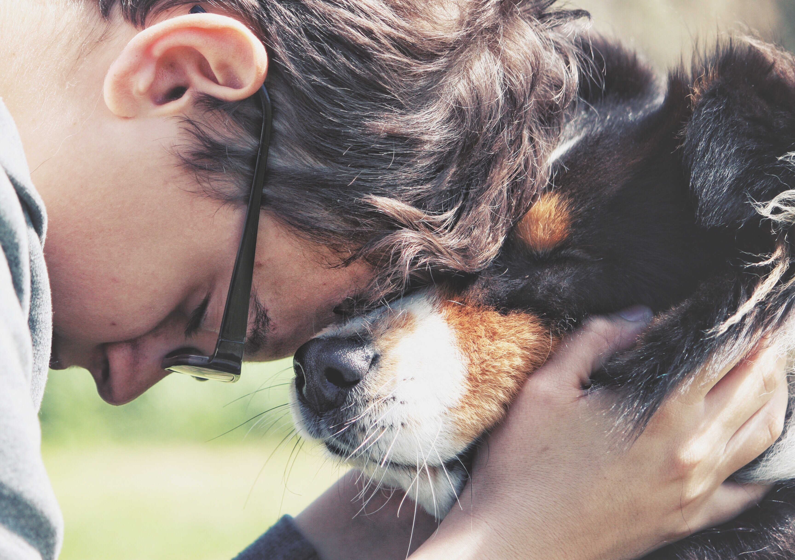

Nuestra Visión
Construyendo un futuro mejor para todos los seres vivos

Visión de GVA
"Somos una Asociación Civil referente en la protección, rehabilitación y defensa integral de animales terrestres, marinos y aéreos."
Pilares de Nuestra Visión
Protección Integral
Defensa completa de animales terrestres, marinos y aéreos mediante programas de rescate, rehabilitación y albergue.
Colaboración Estratégica
Trabajo conjunto con sociedad civil, instituciones académicas, sector salud y ambiental para maximizar nuestro impacto.
Educación Transformadora
Programas educativos en comunidades, escuelas y universidades que fomentan la tenencia responsable y el respeto por la vida.
Innovación en Bienestar
Formación de perros de apoyo emocional y de terapia, uniendo compasión, ciencia y acción para transformar vidas.
Metas a Futuro
Corto Plazo (2025-2026)
- Establecimiento de redes sociales y presencia digital
- Protocolos básicos de atención veterinaria
- Red de voluntarios comprometidos
- Contratos de adopción responsable
Mediano Plazo (3-5 años)
- Capacitación en bienestar animal y primeros auxilios
- Programas de esterilización masiva
- Convenios con veterinarios y autoridades
- Campañas de adopción permanente
Largo Plazo (+10 años)
- Centro modelo de protección animal
- Auto sustentabilidad económica
- Hospital veterinario propio
- Influencia en políticas públicas